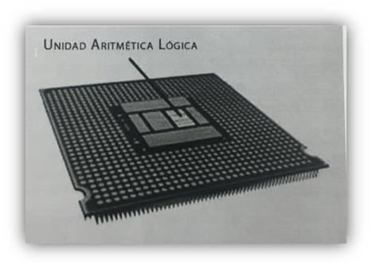
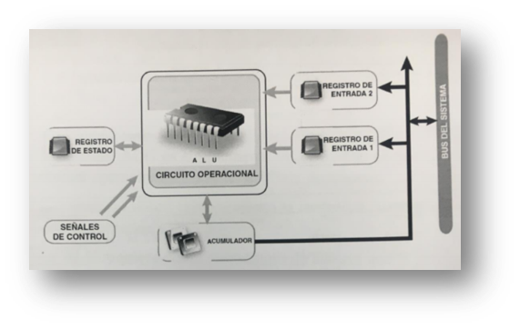
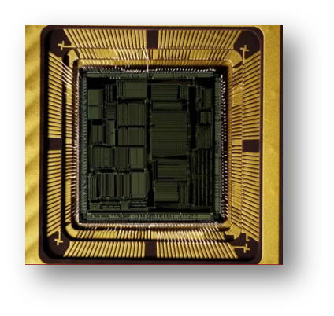
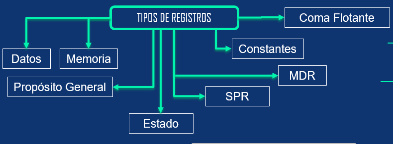

Analisis de componentesUnidad de procesamientoLa unidad central de procesamiento es conocido como el cerebro de todo computador, debido a que integra los componentes electrónicos que permite la interpretación de instrucciones para realizar alguna operación ya sea logica o aritmetica. Las unidades de procesamiento se componen de una unidad de aritmética lógica la cual realiza las operaciones de las instrucciones, de varios registros internos como puede ser contadores punteros, y la Unidad de control que administra la conexión entre la Unidad aritmética lógica y los registros. Unidad aritmetica logicaParte de las CPU son la unidad aritmética lógica la cual se introdujo en el modelo propuesto por Von Newman en 1945, utilizada especialmente para realizar operaciones aritméticas y lógicas las cuales son:

Unidad logica aritmetica
Las partes que la componen son los registros de entrada que están conectados al bus del sistema, un acumulador, un registro de estado y las señales de control, este ultimo debido a que la unidad de aritmética lógica no puede tomar decisiones, la cual necesita de una unidad de control para poder identificar que operación se realizara, además de administrar los recursos y generar flags.

Componentes de Unidad Logica Aritemtica Registros
Los registros son memorias de alta velocidad pero de poca capacidad, con el objetivo que el
procesador guarde valores muy usados y pueda recuperarlos de manera rápida, son integrados en el
microprocesador y existe una variedad de ellos, de distintas maneras como bancos de registros o
en memorias SRAM.

Se derivan en varios tipos de registros como lo son:
Imagen de registros

BusesEn los ordenadores modernos hay varios buses que se dedican a trasladar los datos entre los diferentes componentes del sistema. Los podéis mirar como el sistema circulatorio del cuerpo humano. Y, de la misma manera que este, un desajuste en cualquiera de estos buses puede provocar pérdida de datos y un mal funcionamiento generalizado del sistema. |